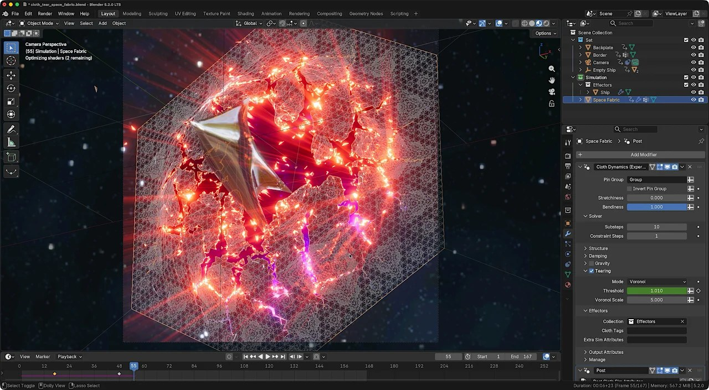

01
Blender 5.2 LTS：Geometry Nodes Physics 已進入可做 Production Prototype 的階段
Blender 官方說明 5.2 LTS 的 Hair／Cloth dynamics 已由 Geometry Nodes 內建資產包裝 XPBD Solver，並支援 Collider、Custom Force 與 Custom Effector。它仍標示 Experimental，但已不是單純技術展示。

Procedural
★★★★★
成熟度
Experimental
先測
Cloth / Hair
完整分析
問題／目標
把 cloth、hair dynamics 從黑盒 simulation 拉進可程序化、可組合的 Geometry Nodes workflow。
Production
高階資產包裝底層 XPBD；Collider 可直接用 modifier stack 幾何，Custom Force／Effector 可插入自訂行為。這讓 Technical Artist 能把 simulation 規則封裝成資產，而不是每個 shot 重建。
限制
官方仍標 Experimental，設計可能迭代；正式專案先做 prototype，不宜立刻替換成熟 cloth pipeline。
20 分鐘實測
同一塊布建立 Collider、風力 Custom Force，再把 setup 存成 node asset，測 cache、重開檔一致性與動畫交接。